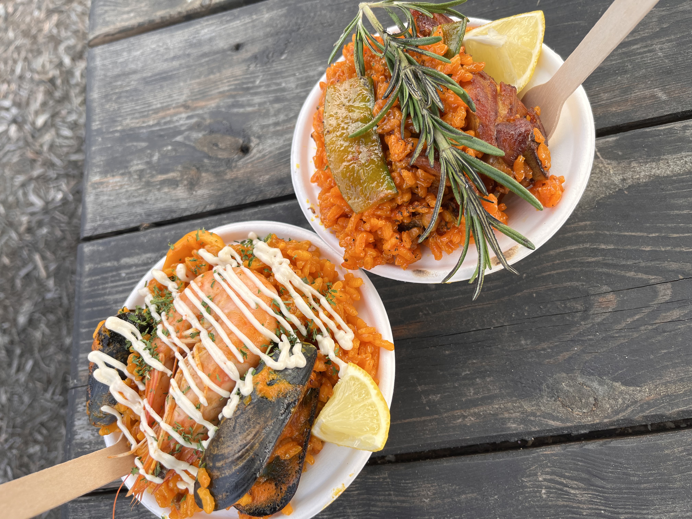
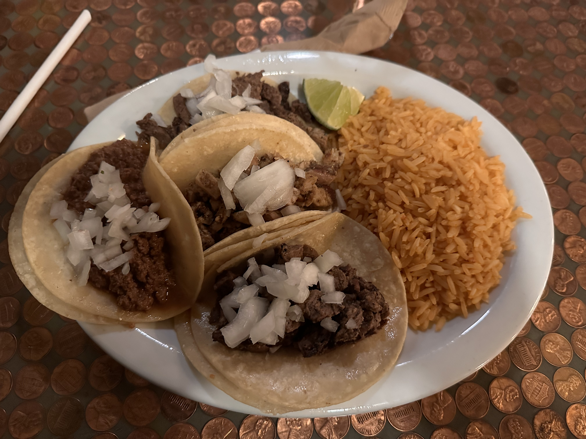
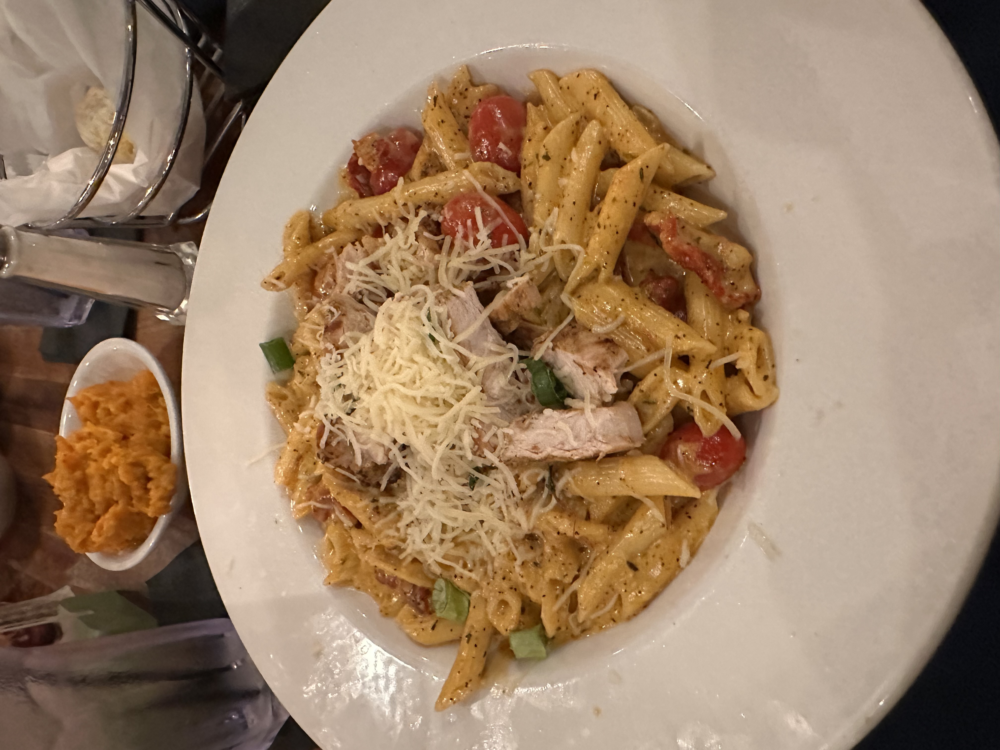

So, when I say I love to eat, it's not a general "foodie" statement – I'm all about diving into my absolute favorite dishes. Top of the list? Any creative take on the classic rice and chicken combo. It's amusing how folks link this preference with my supposed gym buff status – totally off the mark, though. This love affair with rice and chicken goes way back to my younger days. Of course, I do venture out to try new things now and then, but there's something comforting about circling back to my tried-and-true favorites every now and then. It's like a culinary homecoming, you know?
List of Favorite Foods
- Jollof Rice
- Fried Rice
- Jerk Chicken
- Tacos
- Steak


